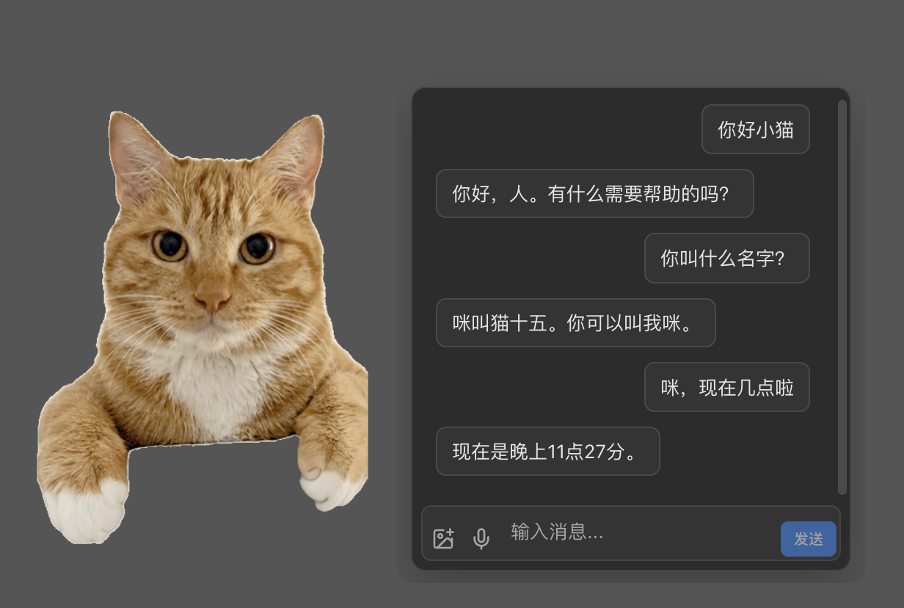
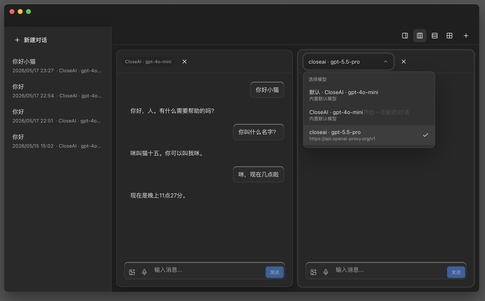
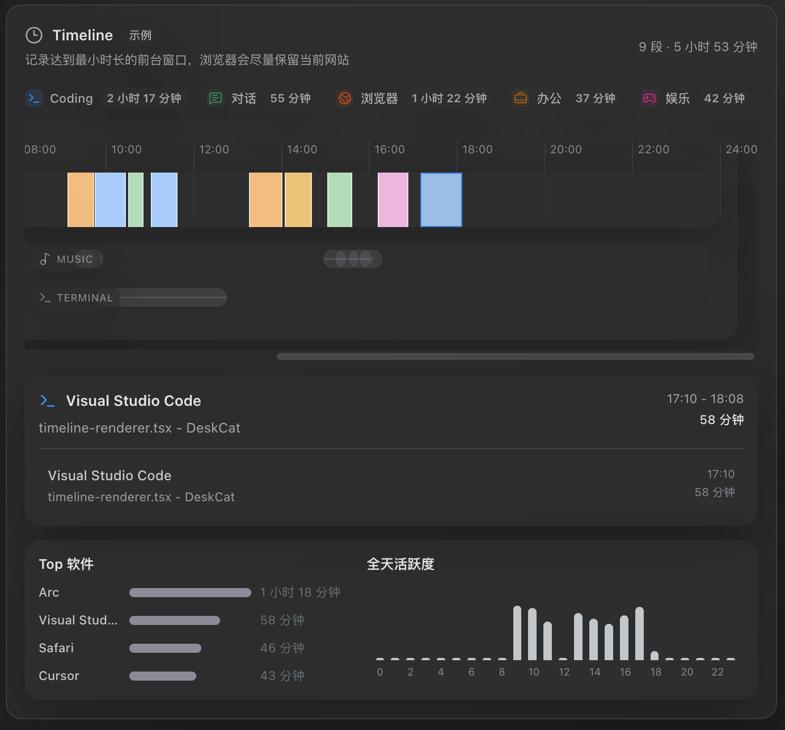
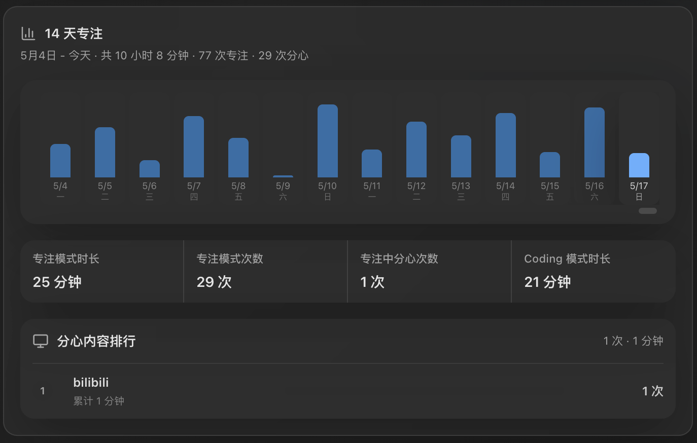
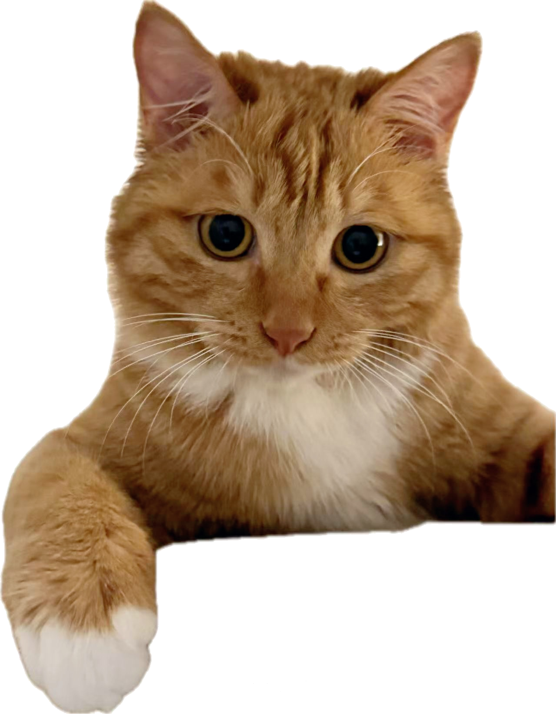
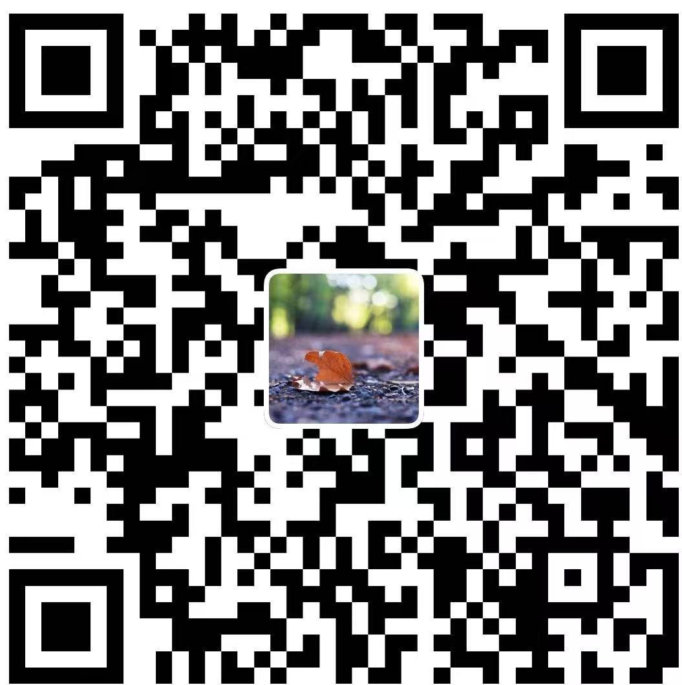

COMPANION
Companion, not clutter
A customizable desktop pet with its own look and persona. It stays out of your way until you need it.
Not just a desktop companion — a reflection of how you work.
DOWNLOAD / V1.1.1
DeskCat is available for macOS today. Windows support is in development, with a download spot already saved.
01 / PRODUCT MOTION
DeskCat is different — a lightweight desktop AI companion that lives quietly in the corner of your screen, always present, never intrusive.
COMPANION
A customizable desktop pet with its own look and persona. It stays out of your way until you need it.
AI CHAT
Ships with a free built-in model. Plug in any provider you prefer — OpenAI, Claude, or whatever fits your stack.


FOCUS
Switch windows, open a chat app — DeskCat notices and nudges you back. Coding mode turns agent state into quiet color signals.
TIMELINE
DeskCat tracks foreground apps, background activity, terminal sessions, and browser tabs, then hands you a daily summary.



CHOOSE YOUR CAT DOOR
Ready to bring DeskCat home?
Pick your download vibe. The cat will not judge. Probably.OPTIONAL CAT TREAT FUND
Scan either code if you feel like tossing a treat into the bowl. DeskCat downloads either way.

Alipay QR